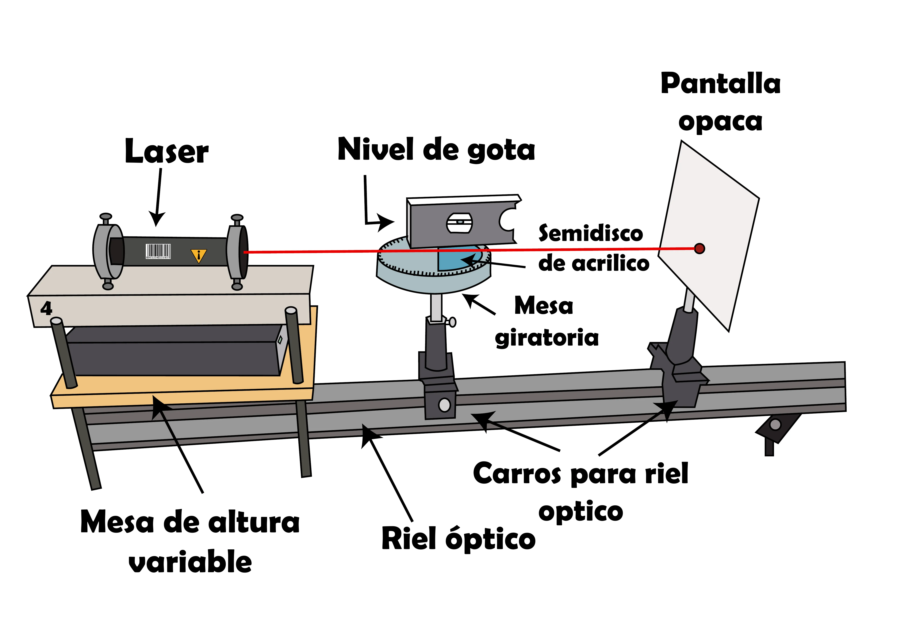

Leyes de reflexión y refracción — Simulador avanzado
Ajusta ángulos e índices, alterna incidencia externa (arriba→abajo) o interna (abajo→arriba),
muestra un transportador/compás, cambia colores del láser y observa RIT, ángulo crítico y coeficientes
de Fresnel (R/T). Puedes arrastrar el punto de incidencia sobre la interfaz y guardar la imagen.

Consejo: prueba con n₁ > n₂ y aumenta θᵢ hasta superar θc para observar reflexión interna total.
Arrastra el punto de incidencia a lo largo de la interfaz.
Lecturas
θᵢ = —°, θʳ = —° | θᵗ = —°
θc = —°
θᴮ (Brewster) = —°
R (Fresnel) ≈ —% | T ≈ —%
Medios
Rayo y Ángulos
Notas rápidas
Ley de Snell: n₁·sin(θᵢ) = n₂·sin(θᵗ). La reflexión especular cumple θʳ = θᵢ.